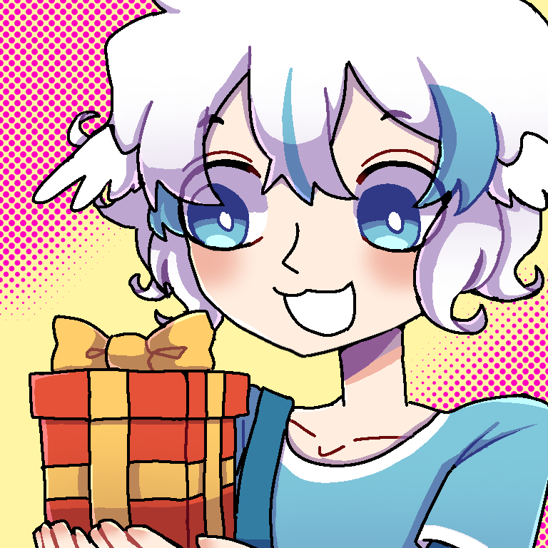

About
About the Project
Project Madelung is a project made by Envybird. It is primarily a slice-of-life comic about various characters and their shenanigans.
Information
Creator: Envybird
Project anniversary: 24/02/2023
Website creation date: 09/09/2024
Website revamp date: 15/09/2025
Public launch: 15/09/2025
Tools: varying drawing tools, VScode
Formats: DD/MM/YYYY, metric system
Languages: EN/ID
Timezone: GMT+7
Rules
1. Preferred audience age range is 15 or up due to occasional appearance of: swear words, mental health issues, sexual jokes, death threats, and other sensitive topics. Viewer discretion is advised.
2. Do not copy, take heavy inspiration, or claim my work as your own. Please take inspiration by a reasonable amount.
3. Any kind of fancontent is allowed.
4. Usage of my works as profile picture or banner is allowed with/without credit.
5. Reposts of my works are allowed with credit.
6. Do not use my works for commercial purposes or anything weird.
If you're unsure about one of the rules you can send an ask to the Project Madelung's official StrawPage.